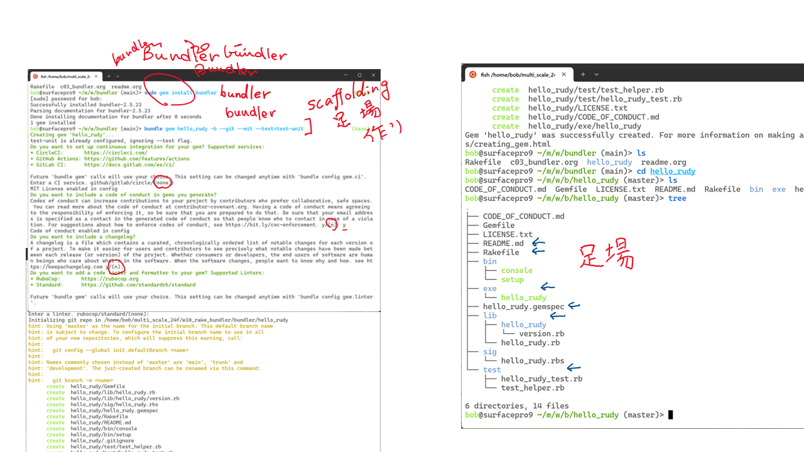
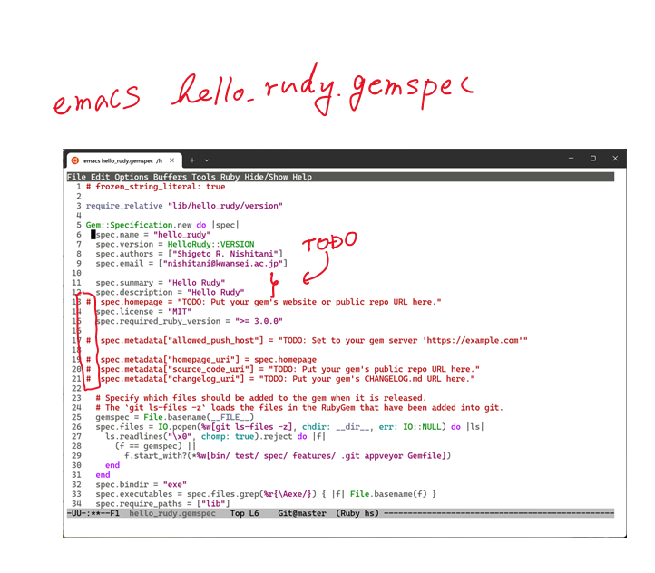
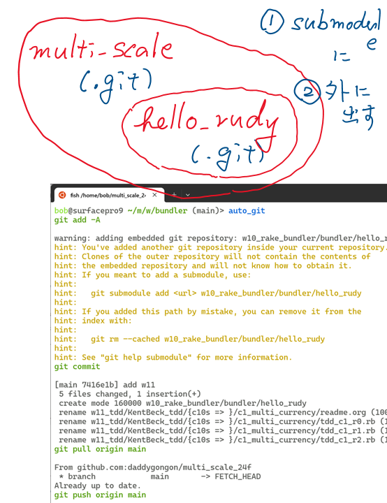

bundler memo
Table of Contents
1 name
bundlerはgemでの一貫性のある開発環境を提供します．
なかでも，bundle gemはgemの開発環境のひな形を提供(scaffolding).
2 install
> sudo gem install bundler > bundle gem hello_rudy -b --git --mit --test=test-unit

3 revise
> chmod a+x exe/hello_rudy > emacs hello_rudy.gemspec
 で怒られたところを修正します． 用意できてないところは，コメントアウトしときましょう．
さらにlib/hello_rudy.rbを次のように加筆します．
require "hello_rudy/version" module HelloRudy class Error < StandardError; end # Your code goes here... name = ARGV[0] || 'Rudy' puts "Hello #{name}." end
4 run local
そうして，動くことが確認できたら，
> bundle exec exe/hello_rudy > sudo rake install:local hello_rudy 0.1.0 built to pkg/hello_rudy-0.1.0.gem. hello_rudy (0.1.0) installed.
そうすると
> hello_rudy Rudy Hello Rudy.
とちゃんと動くようになったでしょ？
5 git
bundler gemでscaffoldingすると，自動的にgit repositoryに なっています． multi_scaleの下に新たなgit repositoryをつくることに なります． そのままgit add -Aすると怒られます．

- 指示通りにsubmoduleにするか
- multi_scaleから出すか
してください．